📖 Sổ Tay Hướng Dẫn Sử Dụng JMeter Web UI
🌟 1. Giới thiệu tổng quan & Giao diện chính
JMeter Web UI là ứng dụng web hiện đại, mượt mà được xây dựng trên nền tảng React, TypeScript và Vite, kết nối trực tiếp với Apache JMeter Engine chạy trên máy tính của bạn.
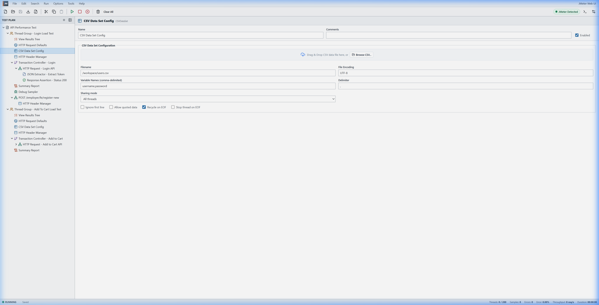
2 Chế độ thực thi linh hoạt
- Real JMeter Execution Mode (Chế độ thật): Hệ thống tự động biên dịch Test Plan thành file XML
.jmxvà khởi chạy tiến trình Java JMeter Non-GUI (jmeter.bat -n -t ...), nạp kết quả và báo cáo HTML thời gian thực. - Mock Simulation Mode (Chế độ mô phỏng): Chạy mô phỏng kiểm thử nhanh không cần môi trường Java, phù hợp để dựng nhanh luồng kịch bản.
Cấu hình & Nhận diện tự động
Bấm vào nút huy hiệu Mode Badge ở góc phải thanh công cụ để mở hộp thoại cài đặt đường dẫn JMeter:
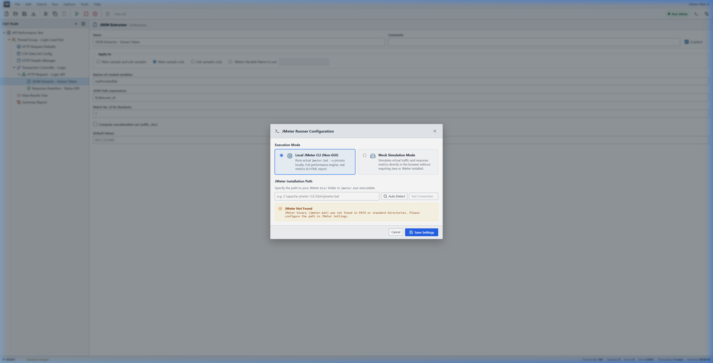
🌲 2. Quản lý Cây kịch bản (Test Plan Tree)
Cây kịch bản bên trái quản lý toàn bộ cấu trúc phân cấp các thành phần kiểm thử theo đúng chuẩn Apache JMeter.
Kéo thả (Drag & Drop) và nạp file
Hỗ trợ kéo thả sắp xếp các node trong cây hoặc kéo thả file .jmx, .jtl, .csv trực tiếp từ máy tính vào trình duyệt:
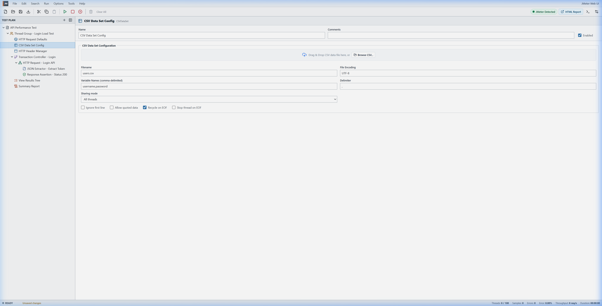
⚡ 3. Tính năng Import từ cURL (Tools -> Import from cURL)
Nhập nhanh bất kỳ request API nào từ DevTools của trình duyệt hoặc Postman thành component JMeter chỉ trong vài giây.
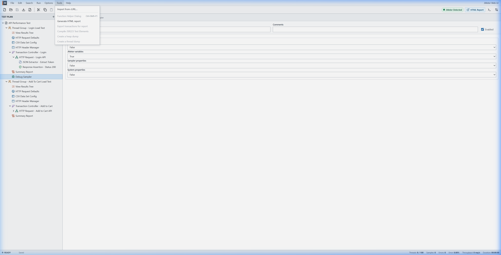
Hộp thoại Live Preview cURL
Dán câu lệnh cURL vào ô nhập liệu. Hệ thống sẽ tự động phân tích Method, URL, Headers và Body Data:
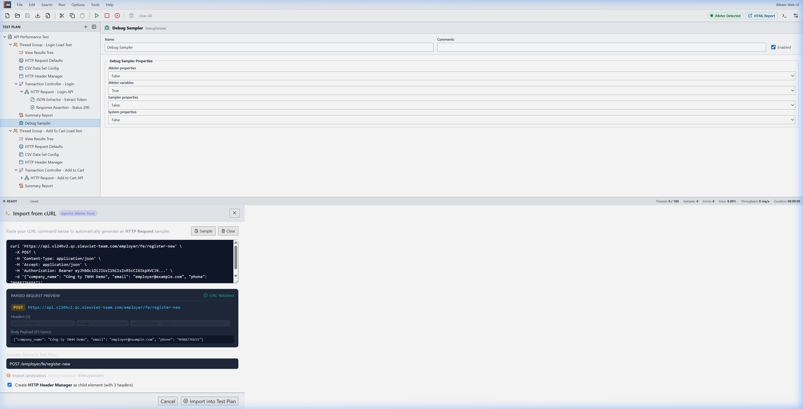
Tự động sinh HTTP Request & Header Manager
Sau khi bấm Import into Test Plan, hệ thống tự động tạo sampler HTTP Request và node con HTTP Header Manager chứa đầy đủ headers:
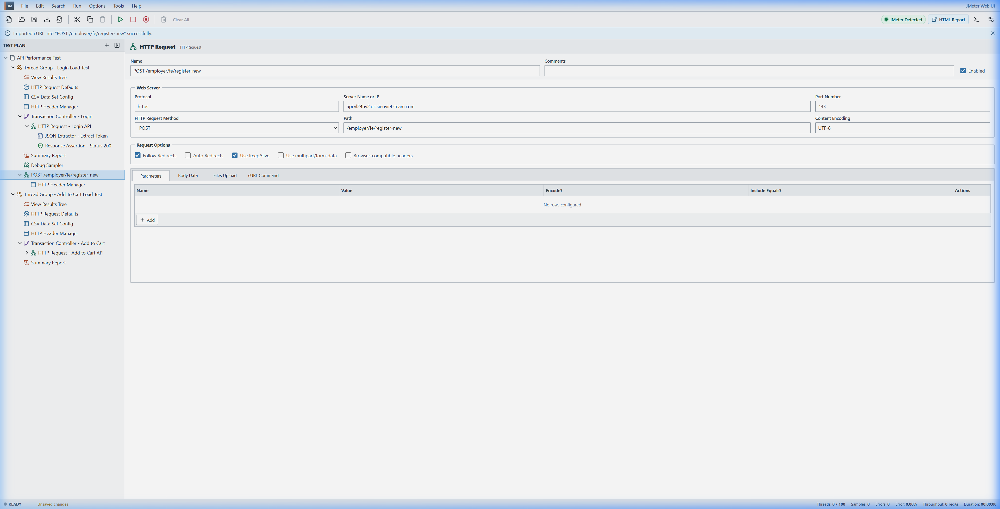
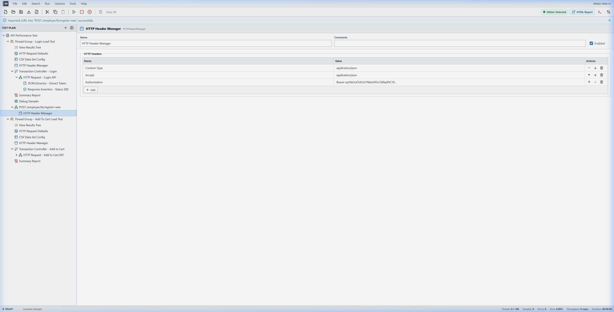
📊 4. Trình xem kết quả (View Results Tree)
Tái hiện 100% sức mạnh của View Results Tree trên Apache JMeter với đầy đủ 3 tab chi tiết.
Tab Sampler Result
Hiển thị mã phản hồi (200/500), Load time, Connect time, Latency, Data size:
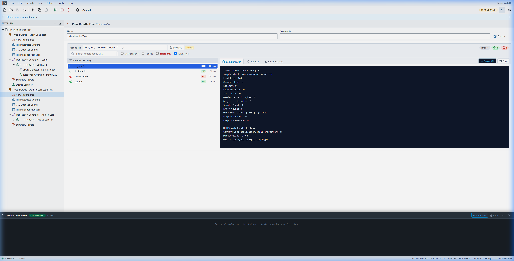
Tab Request & Tự động sinh cURL Code Snippet (Chuẩn Postman)
Xem toàn bộ request payload, headers và câu lệnh cURL được định dạng chuẩn Postman (từng header trên mỗi dòng, JSON Body trong --data-raw) kèm nút Copy cURL:
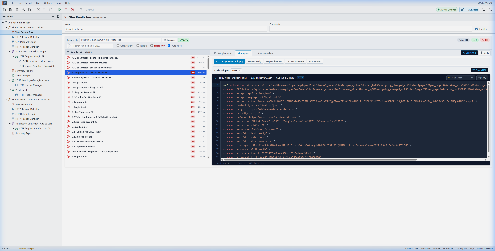
Tab Response data (Giao diện chuẩn Postman & JMeter)
Tái hiện chính xác giao diện Postman: Thanh trạng thái hiển thị mã 200 OK, thời gian phản hồi (894 ms), dung lượng (29.81 KB), nút Save Response, các tab con Body, Cookies, Headers (7), Test Results cùng bộ định dạng JSON Pretty thụt lề 2 spaces và giải mã Unicode tiếng Việt:
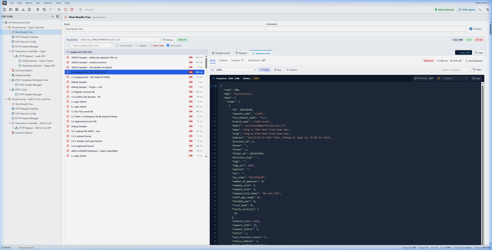
📦 5. Trình quản lý Plugins (JMeter Plugins Manager)
Mở từ menu Options -> Plugins Manager… hoặc Tools -> Plugins Manager…
Kho Available Plugins
Kho plugin chính thức phong phú (Custom Thread Groups, Dummy Sampler, Throughput Shaping Timer, WebSocket Samplers, 3 Basic Graphs...). Cài đặt tự động chỉ với 1 click:
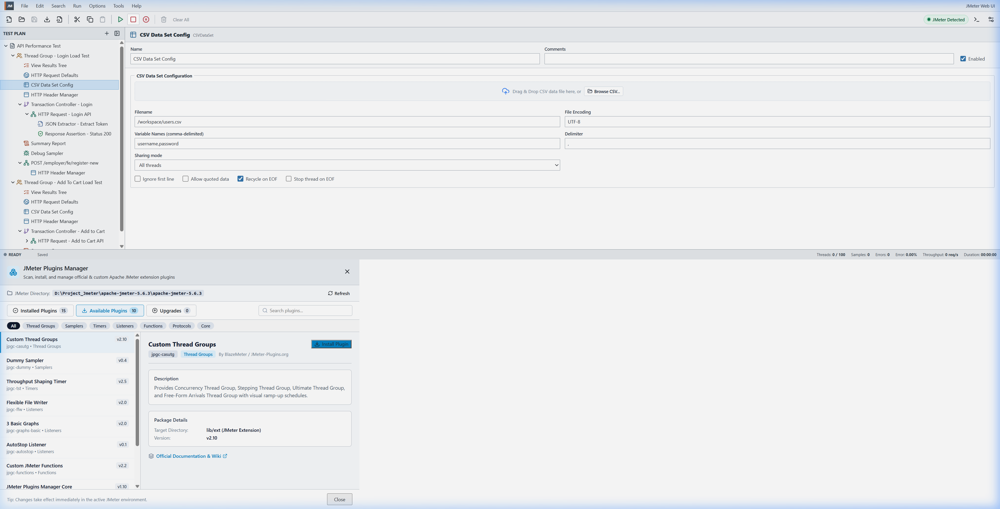
Quản lý Installed Plugins
Tự động quét thư mục lib/ext và lib, hiển thị phiên bản, dung lượng và hỗ trợ gỡ cài đặt an toàn:
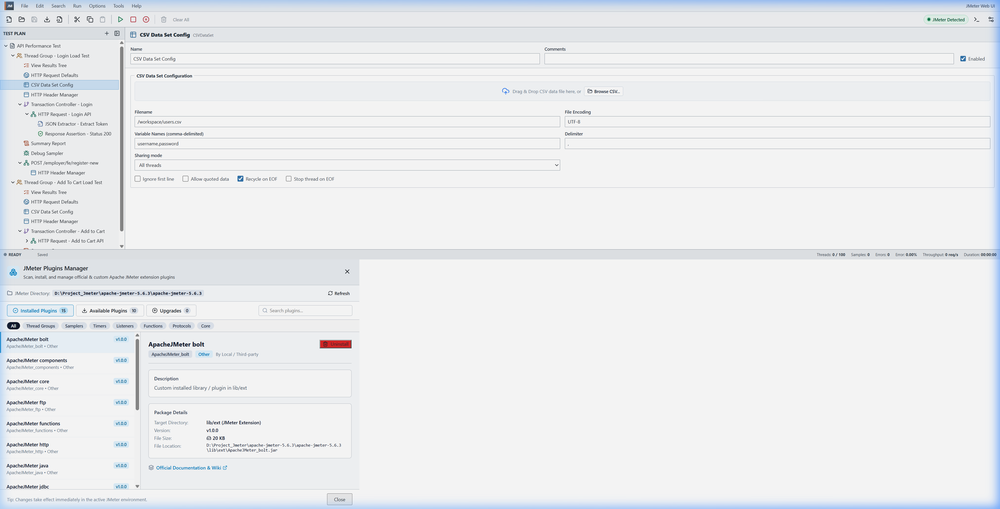
🏃 6. Thực thi & Điều khiển Runner (Stop / Force Stop)
Bấm nút Play (▶️) hoặc phím tắt Ctrl+R để khởi chạy. Mở Live Console Log (icon Terminal 🖥️) để theo dõi thời gian thực:
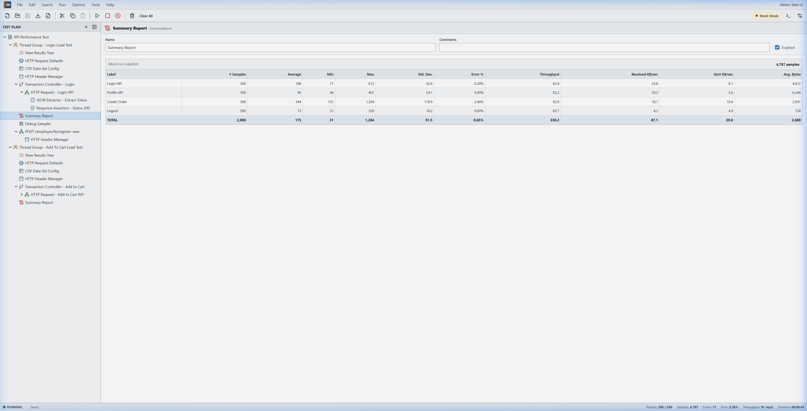
Cơ chế Dừng Test & Force Stop
Nút Stop (⏹️) và Shutdown (⏸️) trên Toolbar luôn luôn sáng và bấm được bất kỳ lúc nào. Khi có tiến trình ngầm cần giải phóng, nút đỏ Force Stop & Reset trên banner sẽ lập tức dọn dẹp tiến trình Java:
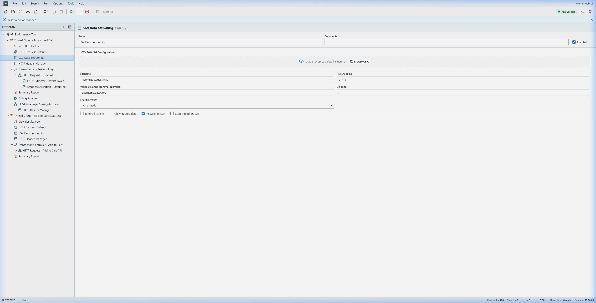
💻 7. Trình soạn thảo mã & Đồng bộ tài nguyên
Trình soạn thảo JSON & Groovy JSR223
Hỗ trợ định dạng JSON tự động, tô màu cú pháp và code snippet mẫu cho các bộ xử lý JSR223:
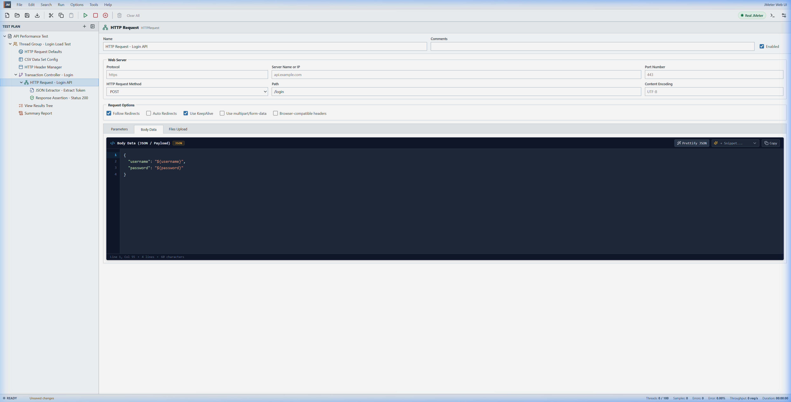
Cơ chế tự động đồng bộ dữ liệu (Asset Sync)
data/ (ví dụ data/provinces.csv), GPKD/, downloads/ vào thư mục chạy runs/run_XXXX/ để hàm FileServer.getFileServer().getBaseDir() luôn tìm thấy file chính xác 100%.
⌨️ Bảng phím tắt tiện ích
| Phím tắt | Thao tác | Chức năng |
|---|---|---|
Ctrl + N |
New Plan | Tạo kịch bản kiểm thử mới |
Ctrl + O |
Open JMX | Mở file kịch bản .jmx từ máy tính |
Ctrl + S |
Save | Lưu kịch bản vào bộ nhớ trình duyệt |
Ctrl + R |
Start Run | Khởi chạy kịch bản kiểm thử |
Ctrl + X / C / V |
Cut / Copy / Paste | Cắt, sao chép và dán node |
Ctrl + D |
Duplicate | Nhân bản node đang chọn |
Delete |
Remove | Xóa node đang chọn |
F2 |
Rename | Đổi tên node đang chọn |